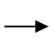
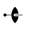

The symbol above shows a twofold axis perpendicular to the plane of the screen,
i.e parallel to Z.
A twofold axis is equivalent to a rotation of 180° about a line.
A twofold rotation about the c-axis, i.e. about
the line 0,0,z, will have
the corresponding symmetry operator -x,-y,z.
This axis has the written symbol "2".

The symbol shown above corresponds to a twofold axis, but now parallel to the
Cartesian X direction.
A twofold rotation about the x-axis will have
the corresponding symmetry operator x,-y,-z.
A fractional value next to the symbol indicates the height
of the axis of rotation above the XY plane.

In space group diagrams for cubic symmetry, twofold axes may appear inclined
at an angle of 45° to the XY plane. The symbol for these is
shown above, the dot indicating the exact position of intersection with
the plane.